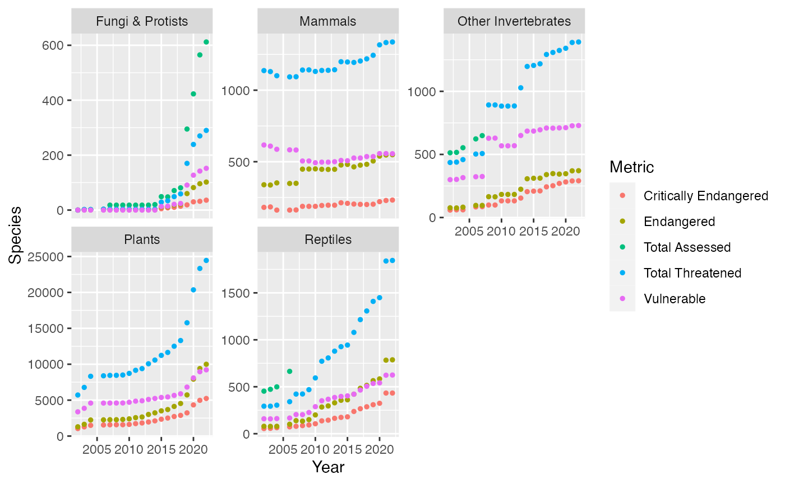

SingleMeasure
SingleMeasure.Rmd
read.csv(file = "../data-raw/IUCN Red List Changes - 2002 to 2022 - Single Measure.csv") -> Single_Measure
read.csv(file = "../data-raw/IUCN Red List Changes - 2002 to 2022 - Multiple Measures.csv") -> Multiple_Measure
head(Single_Measure)## Year Class Metric Number.of.Species
## 1 2002 Amphibians Critically Endangered 30
## 2 2003 Amphibians Critically Endangered 30
## 3 2004 Amphibians Critically Endangered 413
## 4 2006 Amphibians Critically Endangered 442
## 5 2007 Amphibians Critically Endangered 441
## 6 2008 Amphibians Critically Endangered 475
Single_Measure %>%
filter(Class == "Amphibians" | Class == "
Birds" | Class == "Fishes" | Class == "Fungi & Protists") %>%
group_by(Class, Metric) %>%
head()## # A tibble: 6 × 4
## # Groups: Class, Metric [1]
## Year Class Metric Number.of.Species
## <int> <chr> <chr> <chr>
## 1 2002 Amphibians Critically Endangered 30
## 2 2003 Amphibians Critically Endangered 30
## 3 2004 Amphibians Critically Endangered 413
## 4 2006 Amphibians Critically Endangered 442
## 5 2007 Amphibians Critically Endangered 441
## 6 2008 Amphibians Critically Endangered 475Taking a look at species that are in danger of becoming endangered
#as.integer(Single_Measure$Number.of.Species)
Single_Measure %>%
group_by(Metric) %>%
mutate(Species = as.integer(Number.of.Species)) %>%
filter(!is.na(Species)) %>%
ggplot(mapping = aes(x = Year, y = Species, color = Metric)) +
geom_point(size = 0.5) +
facet_wrap(~Class, scales = "free_y")## Warning: There was 1 warning in `mutate()`.
## ℹ In argument: `Species = as.integer(Number.of.Species)`.
## ℹ In group 3: `Metric = "Total Assessed"`.
## Caused by warning:
## ! NAs introduced by coercion
str(Single_Measure)## 'data.frame': 1000 obs. of 4 variables:
## $ Year : int 2002 2003 2004 2006 2007 2008 2009 2010 2011 2012 ...
## $ Class : chr "Amphibians" "Amphibians" "Amphibians" "Amphibians" ...
## $ Metric : chr "Critically Endangered" "Critically Endangered" "Critically Endangered" "Critically Endangered" ...
## $ Number.of.Species: chr "30" "30" "413" "442" ...Trends that show the rate of extinct for each species. Amphibians, Birds, fishes, insects, Mammals, Molluscs, Invertebrate, Plants, reptiles have graphs that show that these species are threatened to go instinct. While Fungi and protist is the largest group that has been assessed
Single_Measure %>%
filter(Class == "amphibians" | Class == "Mammals" | Class == "Fungi & Protists" | Class == "Mollus" | Class == "Reptiles" | Class == "Plants" | Class == "Other Invertebrates") %>%
group_by(Metric) %>%
mutate(Species = as.integer(Number.of.Species)) %>%
filter(!is.na(Species)) %>%
ggplot(mapping = aes(x = Year, y = Species, color = Metric)) +
geom_point(size = 1) +
facet_wrap(~Class, scales = "free_y")## Warning: There was 1 warning in `mutate()`.
## ℹ In argument: `Species = as.integer(Number.of.Species)`.
## ℹ In group 3: `Metric = "Total Assessed"`.
## Caused by warning:
## ! NAs introduced by coercion
Single_Measure %>%
mutate(Species = as.integer(Number.of.Species)) %>%
group_by(Year, Class) %>%
filter(!is.na(Species)) %>%
filter(Class == "Birds") %>%
summarize(bird_mean = mean(Species))## Warning: There was 1 warning in `mutate()`.
## ℹ In argument: `Species = as.integer(Number.of.Species)`.
## Caused by warning:
## ! NAs introduced by coercion## `summarise()` has grouped output by 'Year'. You can override using the
## `.groups` argument.## # A tibble: 20 × 3
## # Groups: Year [20]
## Year Class bird_mean
## <int> <chr> <dbl>
## 1 2002 Birds 596
## 2 2003 Birds 597
## 3 2004 Birds 606
## 4 2006 Birds 603
## 5 2007 Birds 608.
## 6 2008 Birds 611
## 7 2009 Birds 612.
## 8 2010 Birds 620
## 9 2011 Birds 626.
## 10 2012 Birds 656.
## 11 2013 Birds 654
## 12 2014 Birds 686.
## 13 2015 Birds 688.
## 14 2016 Birds 730
## 15 2017 Birds 734.
## 16 2018 Birds 746
## 17 2019 Birds 743
## 18 2020 Birds 740.
## 19 2021 Birds 722.
## 20 2022 Birds 704.Taking look at birds which are closely related to reptiles and seeing how the average of birds have changed throughout the years